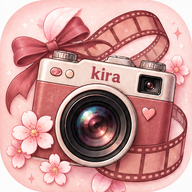

camera ready when you are.
Kira will only request camera access after you tap Start Camera, unless iPhone already reports permission as granted.
Old Rose
Lookstap a look before you shoot
Develop
fine-tune your photo without the clutter.
🎞️
No photo yet
Take or import a photo first.
Current lookOld Rose
70%
Strength70
Export optionsHigh quality
Export quality
Rolls
your photos, grouped like rolls of film.
🎞️
This roll is empty
Take a photo or use Actions → Import Photos.
Settings
make Kira feel like yours.
Camerashooting preferences
Smooth mode uses a lower video bitrate and is the recommended setting for iPhone. Kira records the original camera stream for video so recording stays responsive.
Editingremember your workflow
Savingexports & Photos
Kira saves each shot immediately to Kira Rolls and keeps the camera open. iPhone does not allow a web app to silently insert files into Photos, so queued shots can be sent to Photos together with one tap on the Photos button in Camera.
Appearancetheme & spacing
Storagelocal Kira data
Media stored in Kira0
Saved recipes0
Named film rolls0
Device storage used by this appChecking…
Kira is local-first. Photos, videos, recipes, and settings stay on this device unless you explicitly share or export them.
Backup & Restoresettings, recipes & rolls
Setup backups include preferences, favorite looks, recipes, and roll names. Photos and videos are not included, so backups stay small and fast.
About Kirathe name & little story
Kira
Kira comes from kirakira (キラキラ), meaning “sparkling” or “glittering.” It fits a camera made to capture, style, and save the little moments that shine.
Current versionBuild 11